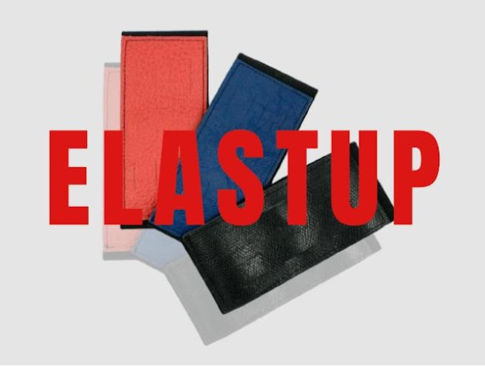
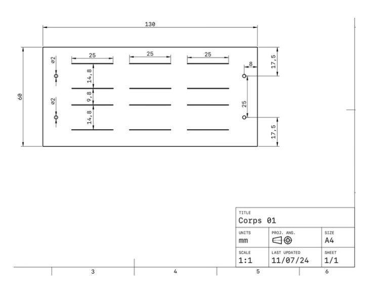

As part of a "Quickstarter" workshop, we were tasked with developing a complete product from scratch and launching it on Kickstarter During one year, we worked on this project from ideation, prototyping to manufacturing and public release. Me and my team created Elastup, a practical and elegant accessory combining a wide elastic band with a piece of veal crust leather. Designed to hold everyday essentials like pens, cutlery, or styluses, Elastup can be wrapped around notebooks, tablets, lunchboxes, and other objects to keep everything in place.
We developed several prototypes using SolidWorks and digital fabrication tools before producing the final version with a custom die cutter and sewing in a workshop. Available in three colors, the product reflects our goal: to design something simple, useful, and aesthetic.
Here's a quick demo of how you can use Elastup in our everyday life :